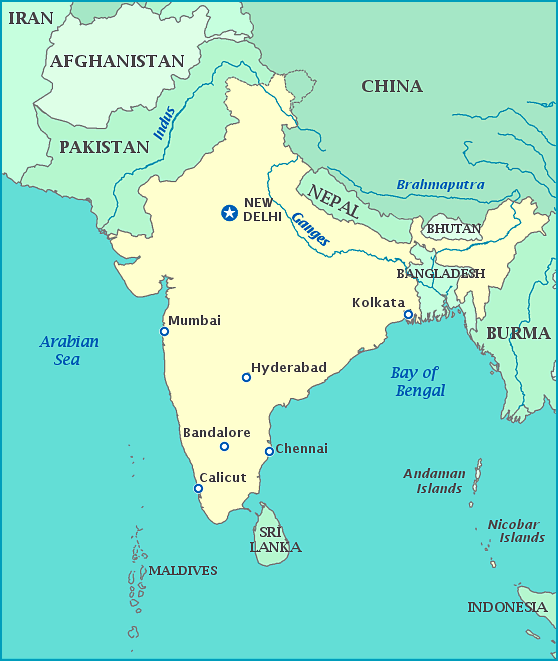
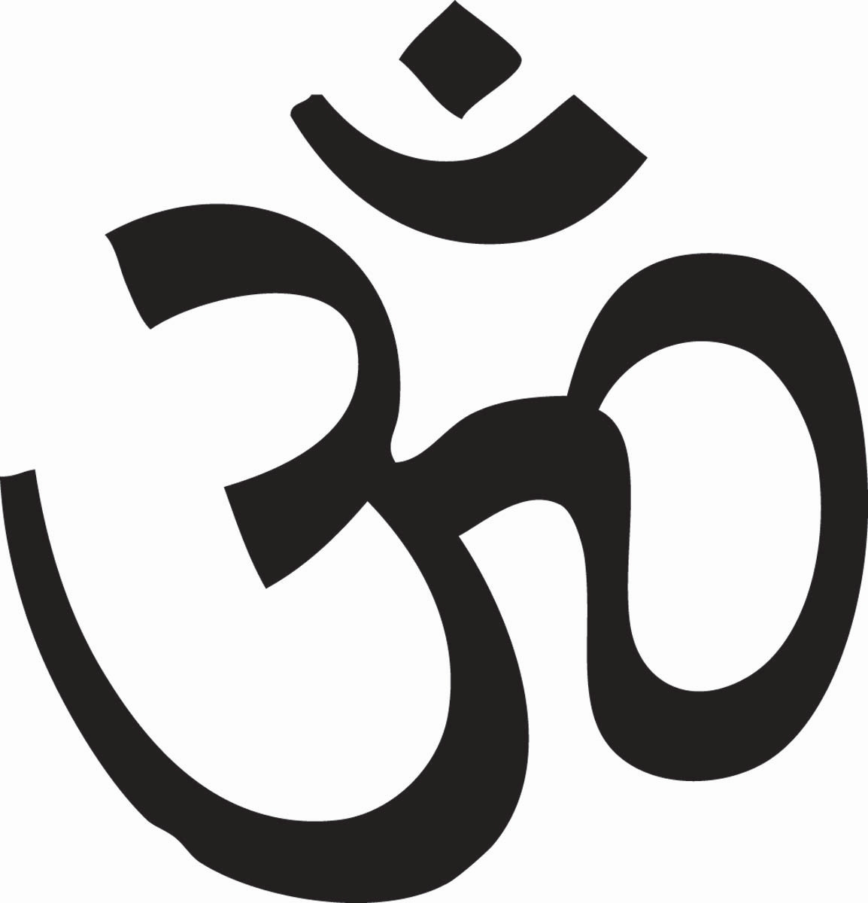

<lang>Punjabi</lang><br><ldata>IE:Indo-Iranian:Indic - India/Pakistan</ldata> <iframe data-autoplay width="840" height="690" src="http://www.youtube.com/embed/DcJ31-D_Iwk"></iframe> Daler Mehndi - Tunak Tunak Tun --- ### Administrative Notes * Guest lecture material is *totally* eligible for tests and homeworks * Please be considerate during lectures * Get your clickers ready today! * <danger>Homework 2 is due Friday in recitation!</danger> --- ## Language Warning * We discuss Language * All of it * We may discuss taboo subjects, words, constructions, or concepts * It's all meant to further academic pursuits * Please come talk to me if you're troubled. --- # Exo-european Indo-European Languages ### LING 1020 - Will Styler --- ## Today's Agenda * Cognates and Borrowings * Splitting S, A, and O * Indic Languages * Hindustani * Sanskrit * Pali --- ### An odd connection <img class="big" src="lotwimg/indoeuropean.gif"> --- ### Cognates come from genetics, borrowings come from theft * A word shared among two sisters is a *cognate* * A word incorporated from another language is a *borrowing* --- English has done a **lot** of theft. --- **English** All *human* beings are born free and *equal* in *dignity* and rights. They are *endowed* with *reason* and *conscience* and should *act* towards one *another* in a *spirit* of brotherhood. **French** Tous les êtres humains naissent libres et égaux en dignité et en droits. Ils sont doués de raison et de conscience et doivent agir les uns envers les autres dans un esprit de fraternité. --- *"The problem with defending the purity of the English language is that English is about as pure as a cribhouse whore.* *We don’t just borrow words; on occasion, English has pursued other languages down alleyways to beat them unconscious and rifle their pockets for new vocabulary."* --James D. Nicoll --- <section data-background="humorimg/darkalley.jpg"></section> --- ### English is not the only thief! * We talk about two kinds of borrowing in language * When you borrow a word completely, it's called a 'loanword' * When you borrow an expression or word, but use native words for each element, it's called a 'calque' --- ## Loanwords --- <lang>English</lang><br><ldata>IE:Germanic - All over</ldata> * 'Tortilla' from Spanish 'Tortilla' * 'Dinghy' from Hindustani 'Dinghi' * 'Shampoo' from Hindustani 'chāmpo' ([tʃãːpoː])' * 'Yoga' from Sanskrit --- <lang>Russian</lang><br><ldata>IE:Slavic - Russia</ldata> * компютер (kompjuter) - 'computer' * амбиция (ambitsiya) - 'ambition' * хип хоп (hip hop) - 'hip hop' * майндфак (mayndfak) - 'mindfuck' --- ## Calques --- <lang>English</lang><br><ldata>IE:Germanic - All over</ldata> * 'loanword' from German *lehnwort* * 'moment of truth' from Spanish *el momento de la verdad* * 'staircase wit' from French *l'esprit de l'escalier* --- <lang>Russian</lang><br><ldata>IE:Slavic - Russia</ldata> * детский сад (detski sad, 'child garden') from German *kindergarten* * cрать кирпичами (srat kirpichami, 'shit brick-INS.pl') from English 'to shit a brick' --- <section data-background="img/clickerbkgrnd.png"></section> The English word 'Rhinestone', coming from the French "Caillou du Rhin" ('rhine pebble'), is a... A: Loanword B: Calque --- ### So, no language is an island * (but English is a thug) * ... and 'thug' is a loanword from Hindi! --- (oh, that's right, Indic languages...) --- ### Indic languages do case a bit differently! --- <img class="big" src="humorimg/notagain.png"> --- (It'll be easier each time, trust me!) --- We talked about how we *mark* roles in a sentence, but... ## How do we *group* roles in the sentence? <!-- .element: class="fragment" --> --- ### Three main "roles" * S (subject of an intransitive sentence) * *John* slept * A (agent in a transitive sentence) * *John* hugged Christopher * O (object in a transitive sentence) * Christopher hugged *John* --- ### Nominative/Accusative Systems * Group S and A together * The same case markers are used for S and A * Subjects *and* agents are nominative! * English: "I slept", "I saw her" * Russian: *Ya spal*, *Ya videl yeo* * English: *"Me slept" * Russian: *"Menya spal" --- ### ... but we don't have to group things that way. --- <lang>Nepali</lang><br><ldata>IE:Indic - Nepal</ldata> * *Kheta-le kheti-lai majagartsa* - "The boy loves the girl" * boy-CASE girl-CASE loves * *khora-le kajo* - "The horse ate." * horse-CASE ate * *hek-lai bostio* - "He lived." * he-CASE lived --- <lang>Nepali</lang><br><ldata>IE:Indic - Nepal</ldata> * *AGENT-le OBJECT-lai majagartsa* - "The boy loves the girl" * *SUBJECT-le kajo* - "The horse ate." * *SUBJECT-lai bostio* - "He lived." * **Agent = -le** * **Object = -lai** * **Subject = **<danger> -le or -lai (!!)</danger> --- ### Split Ergativity A system where S, A, and O are each marked differently, in some or all contexts --- * Agent == -le * Object == -lai * Horse subject = -le * Human subject = -lai * The case marker used depends on **Animacy!!** --- ### Animacy? I've got the perfect example! --- ### the rock vs. The Rock <img src="img/rockcontrast.jpg"> --- <section data-background="img/clickerbkgrnd.png"></section> <img src="img/arock.jpg"> **In Nepali, what case marker would attach to "rock" in "The rock fell"?** A) -le B) -lai <small> Agent = -le<br> Object = -lai<br> Inanimate subject = -le<br> Animate subject = -lai<br> </small> --- <section data-background="img/clickerbkgrnd.png"></section> **In Nepali, what case marker would attach to "Rock" in "The Rock fell"?** A) -le B) -lai <small> Agent = -le<br> Object = -lai<br> Inanimate subject = -le<br> Animate subject = -lai<br> </small> --- <section data-background="img/clickerbkgrnd.png"></section> <img src="img/arock.jpg"> **In Nepali, what case marker would attach to "rock" in "The rock hit Michael Bay"?** A) -le B) -lai <small> Agent = -le<br> Object = -lai<br> Inanimate subject = -le<br> Animate subject = -lai<br> </small> --- <section data-background="img/clickerbkgrnd.png"></section> **In Nepali, what case marker would attach to "Rock" in "The Rock hit Michael Bay"?** A) -le B) -lai <small> Agent = -le<br> Object = -lai<br> Inanimate subject = -le<br> Animate subject = -lai<br> </small> --- # Whew! --- ### Mini-review * Nominative/Accusative - S and A are marked the same * Ergative/Absolutive - S and O are marked the same * Split Ergativity - They're not grouped, or the groupings change! * We swear, this is about it for case! --- # OMG! "This is supposed to be about languages!!!1!" --- (OK, OK! Sheesh.) --- <img class="big" src="lotwimg/indoeuropean.gif"> --- <img class="big" src="lotwimg/iefamiliesmap.png"> --- # The Indic Languages! --- ### Indic languages are the same as Indo-Aryan languages * *Aryan* comes from Sanskrit 'arya', meaning "high" or "noble" * (Yes, that's right, white supremacists are expressing their purity with a Sanskrit loanword) * I'm using "Indic" because it's quicker to say, that's all. --- ### Indic Languages * More than 1.5 billion people speak an Indic Language as a first language * Four Indic languages are among the 20 most spoken in the world! * Hindustani * Bengali * Punjabi * Marathi * Not all Indian languages are Indic * We'll cover Dravidian next week --- ### Indic Languages are politically important! * Hindi - An official language of India * Urdu - An official language of Pakistan * Nepali - The official language of Nepal * Sinhala - The official language of Sri Lanka * Dhivehi - The official language of the Maldives --- ### ... and religiously important! * Sanskrit is the Liturgical Language of Hinduism * Pali is *a* liturgical language of Buddhism --- (So, yeah, important) --- <img class="big" src="lotwimg/languagesofindia.jpg"> --- ### Features of Indic Languages! * Retroflexion * Honorifics * SOV Word Order * Grammatical Gender * Split Ergativity --- ### Retroflexion! * Indic languages are the main IE languages which have retroflex sounds * These were likely stolen from Dravidian languages * [ʈ ɖ ʈʰ ɖʱ] --- ### Honorifics Words or affixes which encode formality in speech --- ### Indian Honorifics * Honorific Prefixes: * Sri - Honorific for men * Kum - Honorific for unmarried women * Smt ('shreemati') - Honorific for married women * Honorific Suffixes: * -ji (Ghandi-ji) * Replacements: * Bhavan/Bhavati - Replaces name to give honor * Baba/Babaji - For spiritual masters * Pandit - For scholars or teachers (see "Pundit") --- ### SOV word order --- ### Grammatical Gender * Often Masculine, Feminine, and Neuter * Unpredictable in most languages (Gujarati, Marathi, Hindi, etc) * Sinhalese declares that all inanimate nouns are neuter --- ### Split Ergativity! * Nepali, we've talked about * Groups Animate-S and O, Inanimate-S with A * Hindustani is Ergative only in the past tense * (Yes, Really) * It's complicated in other Indic languages, too! --- ### Indic languages which we'll mention today! * Hindustani * Sanskrit * Pali --- ### Hindi and Urdu ---  --- ***English***: All human beings are born free and equal in dignity and rights. They are endowed with reason and conscience and should act towards one another in a spirit of brotherhood. ***Hindi***: अनुच्छेद 1—सभी मनुष्यों को गौरव और अधिकारों के विषय में जन्मजात स्वतन्त्रता प्राप्त हैं। उन्हें बुद्धि और अन्तरात्मा की देन प्राप्त है और परस्पर उन्हें भाईचारे के भाव से बर्ताव करना चाहिये। ***Urdu***: :دفعہ 1: تمام انسان آزاد اور حقوق و عزت کے اعتبار سے برابر پیدا ہوۓ ہیں۔ انہیں ضمیر اور عقل ودیعت ہوئی ہیں۔ اسلۓ انہیں ایک دوسرے کے ساتھ بھائی چارے کا سلوک کرنا چاہیۓ۔ --- <lang>Hindi</lang><br><ldata>IE:Indic - India</ldata> <iframe data-autoplay width="840" height="690" src="http://www.youtube.com/embed/M1BzD8bIYII"></iframe> --- <lang>Urdu</lang><br><ldata>IE:Indic - Pakistan</ldata> <iframe data-autoplay width="840" height="690" src="http://www.youtube.com/embed/tU800LK9ubk"></iframe> --- ### Are Hindi and Urdu the same language? <iframe data-autoplay width="840" height="690" src="http://www.youtube.com/embed/Oqh_DvYLG3I"></iframe> --- ### Hindustani * The term for the greater language that is Hindi and Urdu * Has around 380 million speakers, 260 million speakers learning it as a first language * The US only has 313 million people * Hindi has many formal borrowings from Sanskrit * Urdu has borrowed heavily from Arabic and Persian * Hindi and Urdu use different writing systems for it --- ### So, are Hindi and Urdu different languages or what? * Kind of. --- ### Pluricentric Language A language with multiple "centers" and standard forms. --- ### Pluricentric languages * English (US, UK, Australia, South Africa, etc.) * French (France, Canada, "International French") * Portuguese (Brazil and Portugal) * Persian (Farsi, Dari, and Tajik) * Hindustani! (Hindi and Urdu) --- <img class="big" src="lotwimg/languagesofindia.jpg"> --- ### Two other languages --- <lang>Sanskrit</lang><br><ldata>IE:Indic - India</ldata> <iframe data-autoplay width="840" height="690" src="http://www.youtube.com/embed/NQ6CLekQJO0"></iframe> --- ### Sanskrit * A dialect of Old Indo-Aryan * Often used in Hindu and Buddhist rituals * Standardized in a grammar written by Pāṇini. * Gave 3000+ grammar rules, ~2000 word roots * Sanskrit is a zombie-language (not a real term) * Around 15000 daily speakers in 2001 ---  --- <lang>Sanskrit</lang><br><ldata>IE:Indic - India</ldata> ### ओं मणिपद्मे हूं * *Om mani padme hum* * "OM the jewel in the lotus HUM" * "Thus the six syllables, om mani padme hum, mean that in dependence on the practice of a path which is an indivisible union of method and wisdom, you can transform your impure body, speech, and mind into the pure exalted body, speech, and mind of a Buddha" - [The 14th Dalai Lama](http://www.sacred-texts.com/bud/tib/omph.htm) --- ### Most often seen in Tibetan writing <small>(at least in Boulder)</small> <img class="big" src="lotwimg/ommanipadmehum.jpg"> --- ### Speaking of languages important to Buddhism... --- <lang>Pali</lang><br><ldata>IE:Indic - <danger>Extinct</danger></ldata> <iframe data-autoplay width="840" height="690" src="http://www.youtube.com/embed/Qe1gF-250ws"></iframe> --- ### Pali * Likely a close relative of the Buddha's spoken language * The language of Buddhist scriptures and manuscripts * The liturgical language of Theravada Buddhism * These are the only "speakers" of the language * Lots of cases! * Nominative, Accusative, Instrumental, Dative, Genetive, Locative, Vocative, Ablative * Mostly used by Buddhists, for reading Buddhist texts --- <a href="lotwimg/palimanuscript.jpg"><img src="lotwimg/palimanuscript.jpg"></a> --- ## There are far more Indic languages than we have time for! * :( * ... but they're all awesome! --- ### Wrapping Up! * Cognates are from genetics, borrowings are from theft * We don't have to group S, A and O together * There are many Indic languages out there! * Hindustani is Hindi *and* Urdu * ... and it's pluricentric * Sanskrit and Pali are both very important to many people * And very, very dead! --- ## In Recitation: Fun with Farsi and Taleshi! --- ## Next time: Caucasian and Dravidian Languages! <correct>Read Pereltsvaig Ch. 4</correct> --- <huge>Thank you!</huge> http://savethevowels.org/world/slides/lotw_7.html